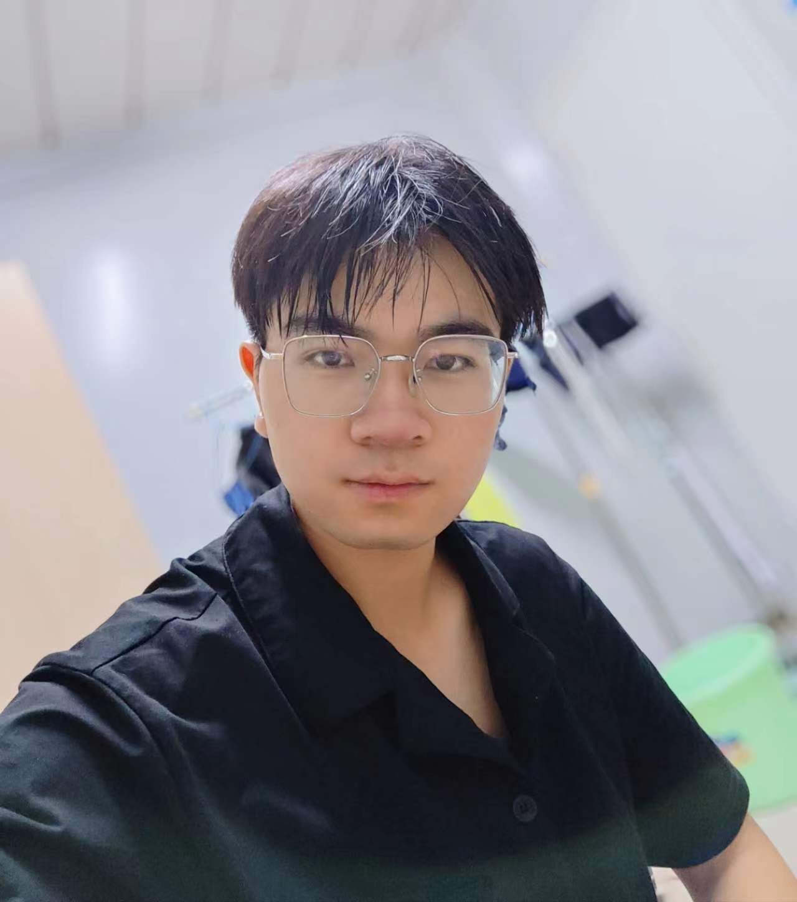
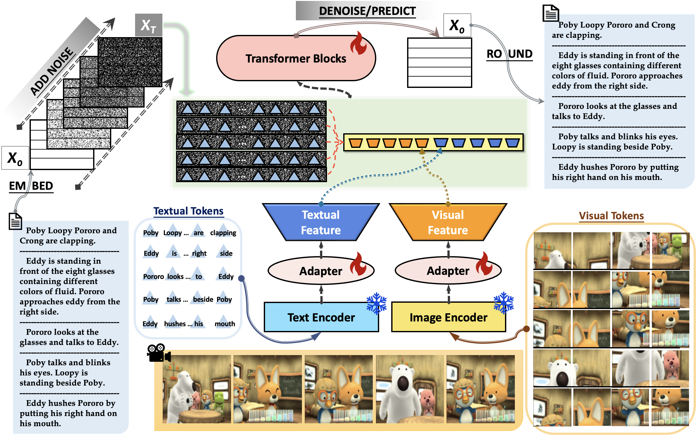

School dragon boat race:
Participated in and completed the dragon boat competition organized by the school. Exercise my practical ability and organizational ability. Also increased knowledge.
|
Email: h181147@163.com |
 |
|
Hi! My name is Jiayou-He. You can also call me JiaJia. I graduated from NanJing Tech University in 2021. After graduation, I worked for two years in the Zhongjiansanju and resigned in 2023 to prepare for the entrance examination of GZU(Guizhou University) . Now I am a prospective graduate student |
|
I graduated from Nanjing University of Technology. majoring in Civil engineering. and actively participated in various activities during my study. These include:
"Mini House" contest:
Participated in the "Mini House" creation competition organized by the college (using wood and other materials to make creative architectural models) and won the first prize.
"Volunteer for modeling Innovation Contest":
Volunteer to participate in the 11th National College Students Advanced Mapping Technology and Product Information Modeling Innovation Competition. And won the title of outstanding volunteer. |
|
|
|
|  |
From 2021 to 2023
After graduation in 2021, I was recruited by the campus to join the Zhejiang Branch of China Construction No. 3 Bureau. Later, I was assigned to work as a security officer in Sibao Qibao resettlement housing project for half a year, and then transferred to the construction post as a construction engineer. He formally submitted his resignation application in February 2023.
|

|
Project deadline: 2021-2023
The project has a total of 27 buildings, each with 12 to 18 floors, divided into 18 and 23 plots. I am in charge of 23 plots, totaling 12 buildings, of which 1#, 9#, 11# and 12# buildings are under my management. From the pile foundation stage to the earthwork, from the foundation to the basement to the main pouring, and finally to the roof pouring and capping, I participated in all of them and witnessed the high-rise buildings slowly rising under my management.
|
|
|
Huge thanks for the website template from YueYANG1996.github.io. |